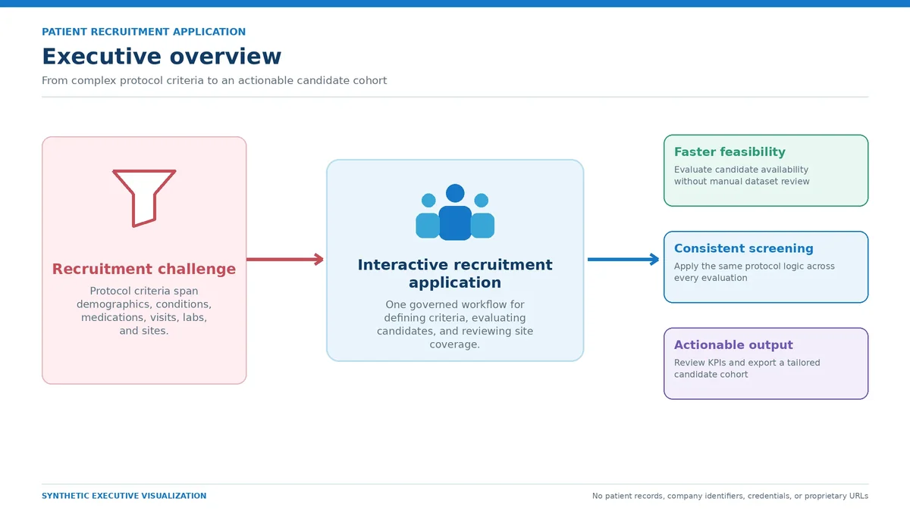
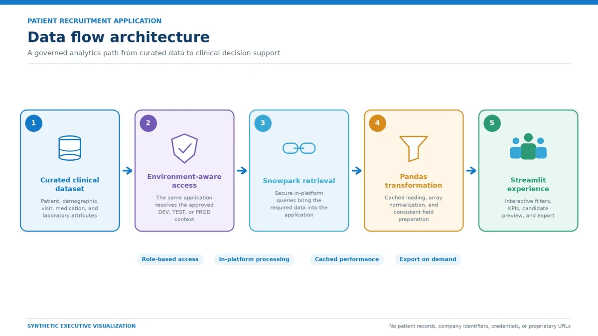
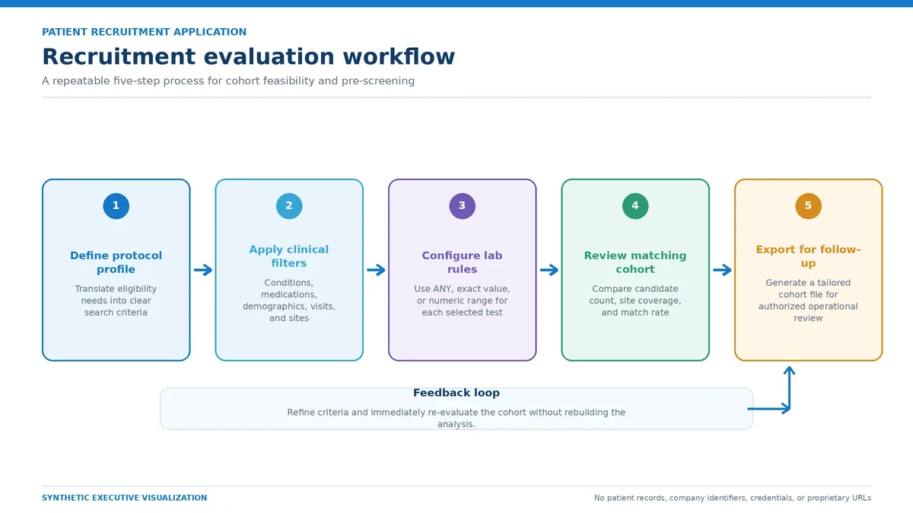
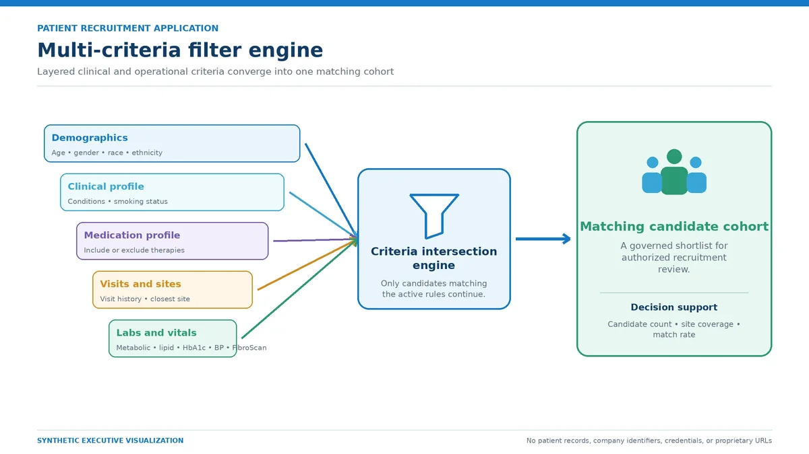
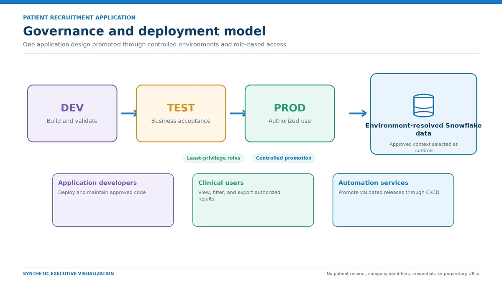

Day job · Snowflake, Snowpark, Python, Streamlit
Patient recruitment search app
Datasets and a Streamlit app that let clinical teams test protocol criteria against patient data and see matching cohorts and the closest sites.

The question
Feasibility and pre-screening meant checking complex protocol criteria by hand against large patient datasets. Teams wanted to apply the criteria once and see the resulting cohort and site coverage straight away.
What I did
I built the Snowflake datasets behind the search: conditions, medications, lab procedures, latest lab values, visit filters and closest-site ranking. The Streamlit app reads them through Snowpark and offers cascading filters, with ANY, exact-value and range modes for lab tests, live counts, and a CSV export of the cohort.
Screens and diagrams




Next: Study mapping app